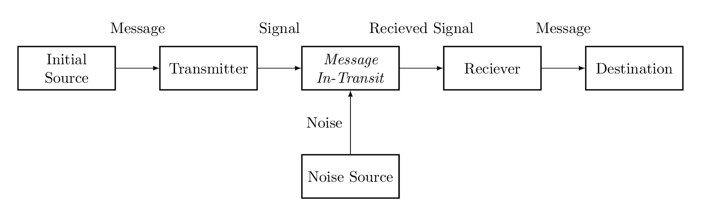

Part II - Information Theory
August 2019
"Where is the life we have lost in living?
Where is the wisdom we have lost in knowledge?
Where is the knowledge we have lost in information?"
- T.S. Eliot, "The Rock"
Index
Section 2.1 - Introduction & Motivation
Information theory, aside from being an interesting line of research in itself, represents a profound intersection of disciplines. There are information-theoretic questions and lines of reasoning being used by mathematicians, engineers, theoretical computer scientists, and both theoretical and experimental physicists. For our purposes, we will mainly be looking at portions of interest to theoretical physicists and mathematicians. In this section, we will focus mainly on understanding fundamental results.
For many, information theory as a field of research starts with Claude Shannon's landmark paper, "A Mathematical Theory of Communication", first published in the Bell Systems Journal in 1948. In it, Shannon posits some very reasonable properties about signals coming from random source and explores the consequences of these properties. Starting with the case of discrete noiseless sources and eventually generalizing first to discrete noisy sources and eventually to continuous signals. So many foundational results were described in this paper that much of this article will be devoted simply to its explanation.
We start with a description of what we call a "communication
system". This is something best described by a diagram.
Here is a diagram.

In its simplest form, this is what signal-based communication looks like. As an example, say we're talking about landline telephones. Starting from the speaker, the sound reverberates on a diaphragm attached to some iron and placed near a magnet. The motion of the magnetized iron induces an electric current which is transfered over wiring to an operator. The operator on a switchboard then connects the speaker to the intended recipient, whose own device performs the reverse process to decode the message - turning the recieved current into reverberation identical (up to some noise) to that produced by the speaker. At just about any of these points there is a capacty for noise to be introduced - either from sheer loss in fidelity from the equipment, or from intentional interference by say, the operator in this example.
Now this is stripped down enough to be generalizable, but that means for this to be useful we need to consider cases with their own structure. The first such case we'll be exploring is the simplest, and it's where Shannon starts too: the discrete, noiseless channel. Discrete, noiseless channels are communication schemes where the messages are sent and received as discrete signals, and there is no interference from the outside or within the equipment - an idealized case, to be sure! Near approximations are very well-designed telegraph machines, or shipboard signal flags on a clear day. We also assume that the messages are encoded with a finite character set - as in both of the examples above.
Shannon begins in a natural place in the description of such schemes: with the capacity of the scheme itself. This quantity is defined in the following way: $$ C = \lim_{T \to \infty} \frac{log(N(T)}{T} $$ where $N(T)$ is the number of number of allowed signals of duration $T$.